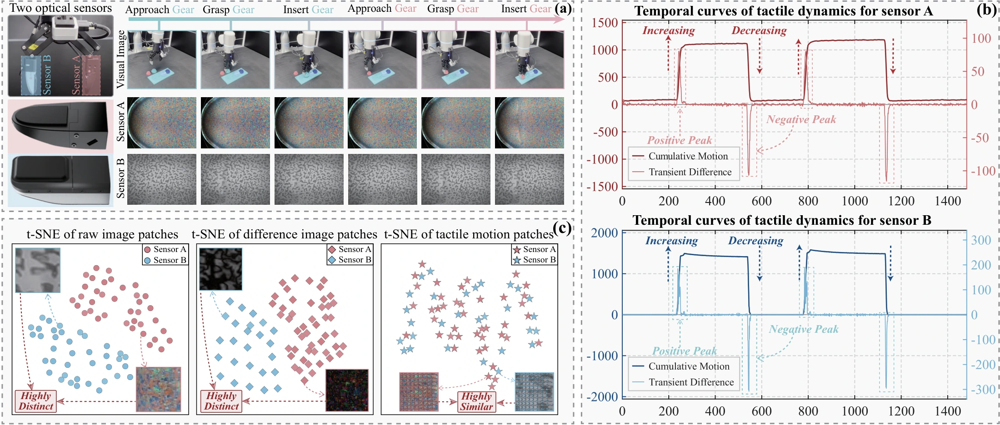
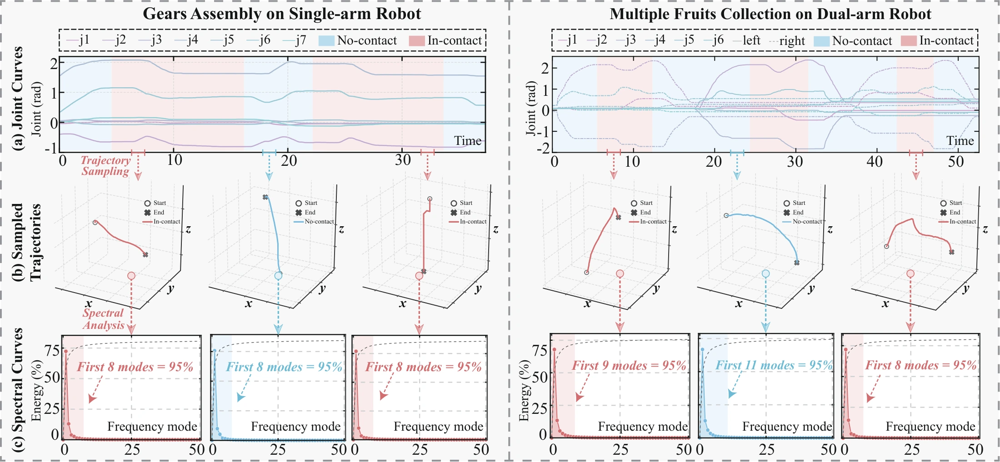
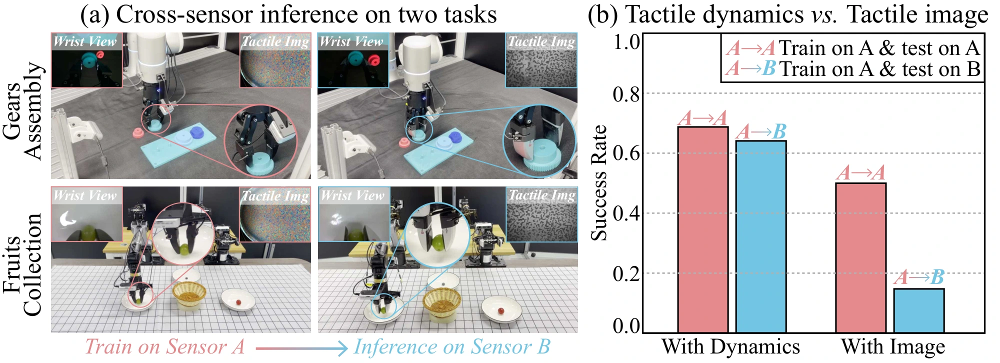

Abstract
Multi-stage contact-rich manipulation requires robots to dynamically adapt global execution strategies across stages while responding to local contact changes in real time. However, existing methods primarily use touch as reactive feedback, leaving its potential for stage-aware guidance underexplored. In this work, we view touch as a coin with two complementary sides: locally, it provides reactive feedback on instantaneous contact, while globally, its temporal dynamics offer proactive contact stage guidance. By exploring the temporal dynamics of optical tactile sensing, we discover that cumulative tactile motions and transient differences jointly yield complementary cues for contact stages and transitions.
Building on this insight, we propose GuidedVTLA, a slow-fast vision-tactile-language-action model that integrates proactive tactile guidance with reactive tactile refinement. Specifically, the slow expert uses the shared proactive guidance to route a stage-aware Mixture-of-Experts for adaptive action generation, while the fast expert uses temporal tactile cues to refine the action chunk during execution, with the shared guidance modulating refinement strength. Furthermore, motivated by the concentration of action trajectory energy in low-frequency modes, we restrict refinement to a compact spectral subspace, reducing the prediction dimension and promoting temporally smooth refinement. Experiments on multi-stage contact-rich tasks across two real-world robot platforms and in simulation demonstrate the superior performance and robustness of GuidedVTLA.
Method
How does one tactile signal guide both action generation and refinement?

- Shared proactive guidance. Encode cumulative tactile motion and its signed transient difference into a compact contact-stage representation.
- Tactile-aware slow expert. Condition mixture-of-experts routing on this guidance to generate a base action chunk.
- Tactile-aware fast expert. Predict low-frequency refinement coefficients from temporal tactile feedback and proprioception. A contact gate from the shared guidance scales them before action reconstruction.
Why Tactile Dynamics Provide Stage Guidance
The two tactile measures describe different aspects of contact, making them useful together.

- No contact vs. stable contact. Both can have little temporal change, but their cumulative deformation can differ.
- Increasing vs. decreasing deformation. Similar cumulative magnitudes can occur in both cases, while the signed difference indicates the direction of change.
Together, these cues guide contact-stage adaptation without manually assigned stage labels.
Why Refine in a Low-Frequency Subspace?

Motivated by this observation, the fast expert predicts a compact set of low-frequency refinement coefficients. The shared contact gate scales their contribution before inverse transformation to the action domain. This reduces the output dimension and promotes temporally smooth refinement within each action chunk.
Hardware Setup & Tasks
Two real-world robot platforms and eight UniVTAC simulation tasks.

Qualitative Results
Baseline and GuidedVTLA executions across the six real-world tasks.
ALOHA · Cylinder Cleaning & Collection
1 / 6All clips retain the playback speed indicated in the original demo. No additional speed-up is applied.
MEASURED PERFORMANCE
Quantitative Results
Success rates across two real-world platforms and the UniVTAC simulation benchmark.
Real-world manipulation
20 trials per task. Each value below is the success rate at the final task stage. The six-task mean is computed from these final-stage scores.
| Method | Cylinder ALOHA | Fruits ALOHA | Chips ALOHA | Plug Flexiv | Gears Flexiv | Bulb Flexiv | Avg. 6 tasks |
|---|---|---|---|---|---|---|---|
| ACT | 5.0 | 0.0 | 10.0 | 0.0 | 0.0 | 0.0 | 2.5 |
| π₀.₅ | 35.0 | 40.0 | 70.0 | 60.0 | 60.0 | 45.0 | 51.7 |
| RDP | 20.0 | 20.0 | 40.0 | 20.0 | 10.0 | 10.0 | 20.0 |
| ViTacMotor | 30.0 | 10.0 | 20.0 | 5.0 | 0.0 | 15.0 | 13.3 |
| TacVLA | 45.0 | 45.0 | 75.0 | 70.0 | 65.0 | 60.0 | 60.0 |
| ForceVLA | 30.0 | 50.0 | 65.0 | 55.0 | 50.0 | 45.0 | 49.2 |
| GuidedVTLA | 55.0 | 60.0 | 85.0 | 80.0 | 75.0 | 60.0 | 69.2 |
UniVTAC simulation
Compare like for like: the shared six-task scope includes every method. The eight-task scope includes only methods with results on all eight tasks.
| Method | Lift Bottle | Pull-out Key | Lift Can | Put Bottle | Insert Hole | Insert Tube | Insert HDMI | Grasp Classify | Avg. 1–6 | Avg. All |
|---|---|---|---|---|---|---|---|---|---|---|
| ACT | 25.0 | 32.0 | 43.0 | 20.0 | 10.0 | 83.0 | 15.0 | 44.0 | 35.5 | 34.0 |
| π₀.₅ | 100.0 | 35.0 | 6.0 | 34.0 | 25.0 | 74.0 | 8.0 | 49.0 | 45.7 | 41.4 |
| UniVTAC-ACT | 65.0 | 41.0 | 20.0 | 30.0 | 40.0 | 68.0 | 28.0 | 100.0 | 44.0 | 49.0 |
| Tactile-VLA* | 97.0 | 32.0 | 15.0 | 10.0 | 41.0 | 56.0 | — | — | 41.8 | — |
| FTP-1* | 97.0 | 48.0 | 65.0 | 47.0 | 64.0 | 79.0 | — | — | 66.7 | — |
| GuidedVTLA | 75.0 | 99.0 | 76.0 | 66.0 | 96.0 | 97.0 | 21.0 | 74.0 | 84.8 | 75.5 |
Bold denotes the best score in each column, including ties. * Results reported by FTP-1, as cited in the paper. A dash indicates an unreported result, not zero. Means are calculated before rounding.
Robustness
Recorded executions under changes in lighting, objects and object positions.
Environment Variations
Non-uniform Light · Fruits & Chips
1 / 3Object Variations
Fruits Collection · Different Fruit Varieties
1 / 2Object Position Variations
Chips Collection · Three Positions
1 / 4These videos illustrate recorded executions, rather than aggregate success-rate estimates.
Cross-Sensor Generalization
Can a policy trained with one optical tactile sensor transfer to another?
